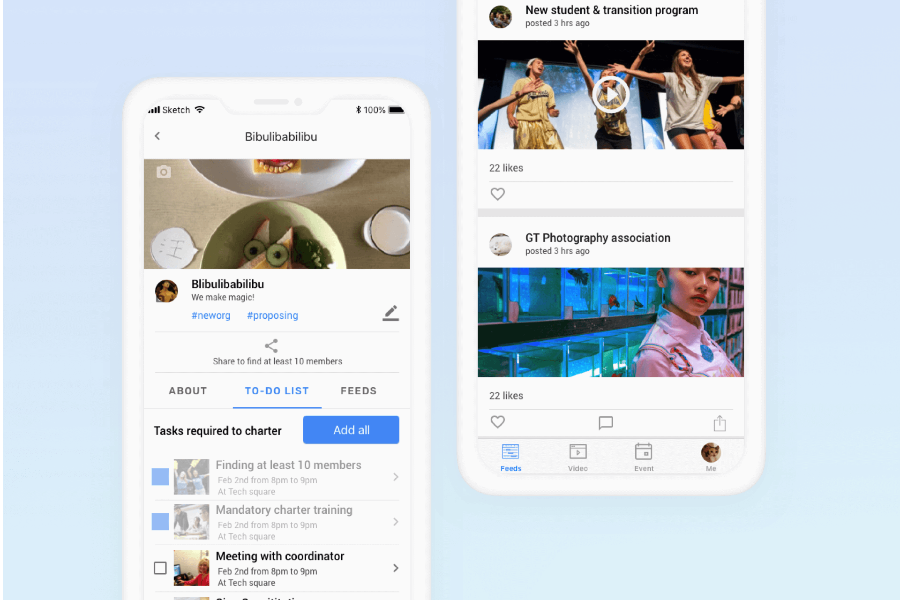

Finding a mentor / mentee
How might we help mentors and mentees connect?

Research participants — mentors, mentees, and a program staff member
Design concepts evaluated and tested with interviewees
Core features designed in the final Ment app
Timeline

Planning and scoping
Before diving into actions, I took the time to examine my knowledge of this domain to draft a research plan.

Due to time constraints, I decided to only recruit interviewees from my personal connections. Although the stakeholders include student mentorship program staff, new student orientation program officers, I decided to focus only on the experiences of mentors and mentees for this project.
Understanding the problem
I conducted secondary research and interviewed 4 students who both acted as mentor and mentee, and one staff member currently in charge of one of the Georgia Tech mentorship programs.
I used personas and journey maps to synthesize the research findings in the affinity map, identifying key pain points and corresponding design opportunities.


I distilled the key insights from the research as follows:

After the research phase, I realized that connecting mentors and mentees is much more important to the experience for both parties. So I focused on the connecting part first in my following design processes, then tended to the mentor–mentee transition experience.
Ideating
What platform
According to the journey map, major ways schools can reach experienced students are through email. So it would be most convenient to take actions directly from there. However, the frustrations mainly appear during the mentorship, and the experience often happens on the go. I created the diagram to compare different platforms and tradeoffs. Finally, I decided to move on with a mobile app.

I came up with 3 concepts as potential solutions, went back to my interviewees for their thoughts, then evaluated them with an impact and effort matrix to decide on which direction to move forward with.


Designing
I went back to my personas and journey maps to distill tasks users need to achieve within this product, and created storyboards to help visualize the use cases.

Crafting navigation
From the user tasks I distilled, I learned there would be 5 major features in the app. I designed many alternatives to find the best navigation structure.

Crafting browsing
I went back to research and summarized mentors' and mentees' needs into categories, and found they also have other dimensions to browse — major, time, and role (as mentor or mentee). When trying to solve the flexibility pain point, I got trapped in another potential pain point: find the right help to get or give the right help.
I went back to my research and the prompt to scope down and reduce the types to present. As the prompt was focused on helping new students adjust to campus life, I decided to cut out "fun", "interest-related", and "just hang out" categories for now and settled on a smaller group of information.


Wireframes
I made the following key design decisions and created the wireframe flow.
Create a meetup right after signing up: to initiate the project and ensure the active participation of users, I decided to let users create a meetup or choose to attend one right after entering the platform.
Break create meetup flow into steps to guide users: giving agency to UGC while controlling quality is difficult. As any individual can create a meetup as either mentor or mentee, I realized that when tackling the flexibility pain point, a mess is very possible if users can create meetups of all kinds. So I decided to use steps with specific instructions on how to create a meetup, reducing the noise on the platform.
Why recommendations in create meetup flow: since the platform contains meetups for both mentors and mentees to sign up for, it is highly possible that when creating a meetup as a mentor, there would already be a meetup from the mentee's side requesting that help. Recommendations reduce the cluster.
Why discussion for meetups: my research shows that people are unsure about what to talk about before a mentor/mentee meetup. A discussion thread before the meetup helps reduce uncertainty and helps both parties prepare.

Cognitive walkthrough and user feedback
With the whole wireframe flow, I recruited an HCI expert to walk through the wireframes and identify potential issues. I also went back to my interviewees to test the mid-fi prototype. From their feedback, I developed the following iterations.
Iteration 1: Letting users skip the create meetup flow when signing up.

Iteration 2: Adding a search function.

Iteration 3: Making more sense in the create meetups flow with clearer copy writing and illustrations.

Hi-fidelity prototype
Due to time constraints, I did not spend a lot of time exploring the visual style and systems. As this experience is designed for my school, I used Material theming tools to develop a hi-fi prototype that aligns with Georgia Tech's branding system.
If given more time, I would consider the scalability of the experience (if it is possible to scale the solution to other US campuses), and develop a UI system with better scalability.

Measure success
Although this product might not be launched, I still thought about ways to measure its success. Using Google's HEART model, I drafted a success measuring plan relevant to improving this experience.

Next steps
Due to time and effort constraints, I based my solutions on limited and biased research, and did not have enough time to thoroughly examine and explore design alternatives. Given more time, I would develop more structured generative and evaluative research plans for a better informed design solution.
More information on what's important: I used assumptions to prioritize certain categories of meetups in the create flow, time filters, and information to show on meetup cards — all of which need further validation with testing or more research.
Incorporate the design into the whole service picture: In this solution, I focused only on the digital product, considering less about the broader picture — how to seed initial users and meetups, how to encourage mentors to commit more time to helping others.
Other stakeholders: As I scoped down to student mentors and mentees, I did not touch much on the school as a major stakeholder that initiated this project. Given time, I would do more research on how school officials manage and support the experience and make corresponding iterations.